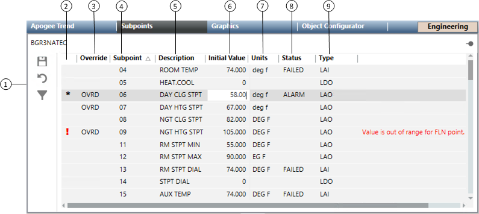

APOGEE TEC Subpoints
Select a topic to continue:
APOGEE TEC Overview
APOGEE TEC is a system application that lists the subpoints for a selected P1 or BACnet FLN application. The Subpoints workspace displays in the Primary Pane when System Manager is in Engineering mode and an APOGEE P1 TEC or BACnet FLN application is the primary selection.
APOGEE TEC Workspace

NOTE:
You can sort the information in the various columns by selecting the column headings.

Item | Description |
1 | APOGEE TEC toolbar |
2 | Status Indicator |
3 | Override |
4 | Subpoint NOTE: Column displays only when an APOGEE P2 TEC application is selected in System Browser. Does not display when BACnet TEC applications are selected. |
5 | Description |
6 | Initial Value When you override an initial value, OVRD displays in the Override column. NOTE: BACnet initial point values are not defined in the panel, therefore, this column initially displays as blank. Once the BACnet device has a Function assigned to it, the column will populate. |
7 | Units |
8 | Status |
9 | Type |
10 | Status Description |
 to save the settings.
to save the settings.